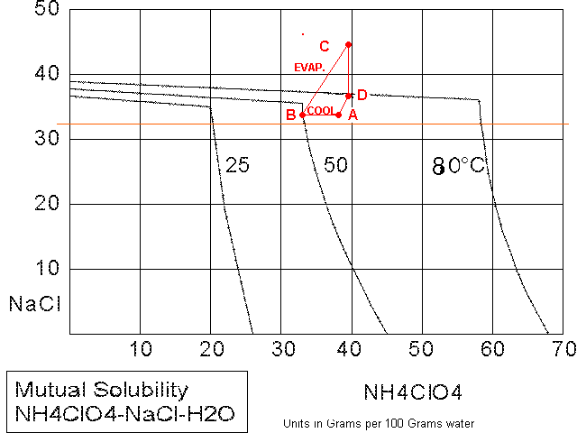
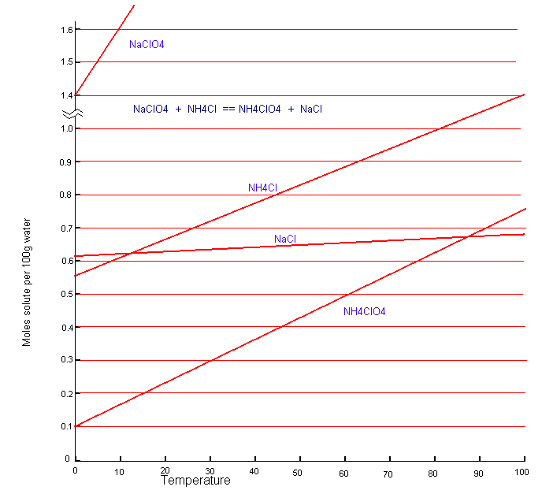

Ammonium Perchlorate from Sodium Perchlorate and Ammonium
Chloride
The following assumes that ALL traces of Chlorate have been
destroyed before conversion of the Sodium Perchlorate into Ammonium Perchlorate.
If there are traces of Sodium Chlorate present, Ammonium Chlorate will form, and
this will give a dangerous unstable product.
See Destroying
Chlorate by chemical means for to eliminate all Chlorate.
| Molecular weights |
| NH4ClO4 |
NaCl |
NH4Cl |
NaClO4 |
| 117.5 |
58.5 |
53.5 |
122.5 |
Method 1
You can scale the following up or down:
Looking at the
mutual solubility diagram below we see that since
NH4ClO4 is the least soluble of all the possible
products at low temperature it will precipitate/crystallise first. However, if
your solutions are too concentrated NaCl will also precipitate, contaminating
your product. So, aim to have about 33g of NaCl per 100g of water at the end of
your conversion as this is just below the saturation point of NaCl (see graph).
Now, 33g of NaCl is 33g/58.5g = 0.564 moles of NaCl.
You need 0.564 moles
of NaClO4 per 100ml water, that's 0.564 * 122.5g = 69.1g
NaClO4
The amount of ammonium chloride required is 0.564
moles, which is 0.564 * 53.5g = 30.17g NH4Cl
This will produce
0.564 moles of NH4ClO4 which is 0.564 * 117.5g =
66.27g NH4ClO4
Now, in order to get everything to dissolve you need to have the temperature
at 90 degrees or slightly higher. If you go too hot you lose a lot of water due
to evaporation. You should dissolve the NaClO4 first in a minimum of water @
about 90 degrees. Then dissolve the ammonium chloride in the rest of the water
but this requires a lot of heating because ammonium chloride absorbs a lot of
heat when it dissolves.
Then simply add the solutions, mix and cool ever so
slowly to -10 degrees or so over a period of about 24 hours. You can wrap the
container is insulation and leave it to cool down to room temperature (in a warm
place if possible). Then put into freezer, still wrapped, and cool further.
Don't let ice form. The slow cooling will produce big crystals of ammomium
perchlorate which are easily washed with cold water with minimum loss of
ammonium perchlorate.
The total amount of ammonium perchlorate produced is
0.564 moles which is 0.564 * 117.5g = 66.27g. Not all of this will come out of
solution but you should get about 50 grams.
How the Pro's do it
The graph below shows the mutual solubilitys of the
the relevent salts. The system is suited to fractional crystallization. Starting
at point A the mother liquor is cooled, resulting in the crystallization of some
Ammonium Perchlorate. The composition of the mother liquor is now represented by
point B. Some liquid is now evaporated off (flashed off, as it is called) to a
composition C. The evaporation is done in a vacumm and some Sodium Chloride, the amount being represented
by the length of line segment C-D, will ppt out of solution so that the point D
is reached. Some water is now added so that the starting concentrations are
reached again, point A. Some more reactants are added (Sodium Perchlorate cell solution +
Ammonium Chloride solution) to maintain the volume in the crystallizer system and the cycle is repeated.
This process is continued
repeatedly so that crystals of the proper shape, size and size distribution are
obtained.
From: Chemical Engineering Progress (Vol. 57, No. 11, page
138 (Nov. 1961))

Method 2
See US Patent No. 1,453,984 which is available here.
Having read the patent it is simply a matter of using a weighing scale to
keep track of your solutions so that you will know what percentage solution you
are dealing with.
The graph below shows the solubilitys of the relevent salts in both methods
above. Ammonium Perchlorate and Sodium Chloride form what is called the 'stable
pair', ie. they are the most two likely salts to ppt out of solution. This graph
is not a mutual solubility graph.

HIT THE BACK BUTTON ON YOUR BROWSER
BACK TO TOP